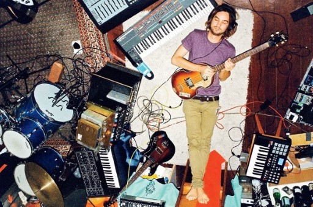

Lonerism - A magány megzenésítve
A Lonerism című, 2012-ben megjelent album Kevin Parker önelkényeztető, erősen pop befolyásoltságú, pszichedelikus rock magnum opus-a, amely szinte képes transzcendálni a hallgatót.

“It’s all about the loneliness, but also the freedom.”
One of the standout tracks, "Elephant" , brings a heavier, fuzz-driven sound.

Sample Track